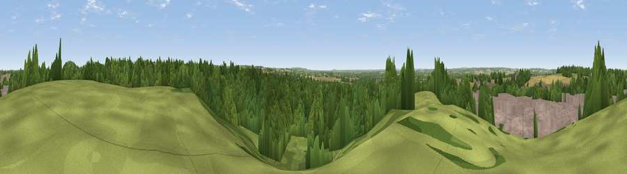

Viewpoint near Wood End
#40098 in England · top 65% of its area beats it · near Wood End · access?Where it is
The exact computed spot (SP 23525 98225). Click the marker for map links.
Public access: no public right of way or access land is recorded at this exact spot — it may be on private land. Computed from Natural England's CRoW access layer and OpenStreetMap rights of way — not the legal definitive map. Always verify locally.
The view, rendered

A 360° render of this exact spot computed from the terrain model, tree cover and land cover — summer colours, afternoon light, calibrated against photographs of famous viewpoints. Real trees, hedges and buildings will differ in detail.
The panorama
Grey silhouette: terrain skyline in each direction (720 bearings, Earth curvature and refraction included). Dashed green: skyline with trees (+15 m) and buildings (+8 m) as obstacles. Blue strip: how far the ground is visible on each bearing.
Where the view opens
Wedge length = distance to the farthest visible ground on that bearing (vegetation-aware). Rings at 10, 25 and 50 km.
What fills the view
50% woodland · 19% cropland · 17% built-up · 14% grassland
Angular shares of the visible panorama (visual magnitude), not map area. Landscape diversity 0.54 (0–1 Shannon).
Key numbers
More beautiful places nearby
The staircase of upgrades: each row has a higher view potential than everything closer. Driving times are estimates from straight-line distance, calibrated against real road routing — check an actual route before setting out.
| Place | Direction | Drive | Score |
|---|---|---|---|
| Viewpoint near Dordon | NE · 2 km | ~5 min | 44.8 |
| The Round Berry | NE · 7 km | ~14 min | 51.1 |
| Viewpoint near Ansley Common | ESE · 8 km | ~16 min | 69.0 |
| Viewpoint near Streetly | W · 17 km | ~30 min | 69.5 |
| Viewpoint near Stanton under Bardon | ENE · 27 km | ~43 min | 76.0 |
| Viewpoint near Woodhouse Eaves | ENE · 32 km | ~50 min | 77.7 |
| Viewpoint near Abberley | WSW · 57 km | ~79 min | 78.1 |
| Abberley Hill | WSW · 57 km | ~79 min | 80.4 |
52.58133, -1.65425 · source: screening · position refined by local search. Computed location — check access rights before visiting.